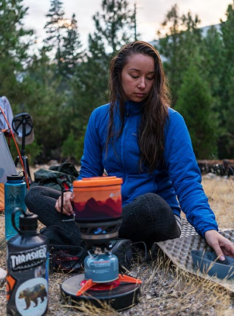

O mně

Jmenuji se Adéla, ale všichni mi říkají Áďo. Většinu svého volné času trávím v přírodě. Kdykoliv můžu, vyrazím na
hory. Hory miluju, nemůžu se jich nabažit, jsou prostě úžasné.
Dříve jsem pracovala v kanceláři u počítače, ale nedávno jsem se rozhodla, že ze svého koníčku údělám zdroj obživy,
a stala jsem se turistickým průvodcem. Splnila jsem si životní sen a organizuji zájezdy do hor po celém světě.
Turistický průvodce

Pracuji jako turistický průvodce pro cestovní kancelář Horalka. Organizujeme zájezdy do hor po celém světě. Většinu
zájezdů, které organizuji, také na místě sama provázím. Na horách jsem nejšťastnější a jen v kanceláři bych
nevydržela.
Pokud si nevyberete z naší nabídky, mohu vám pomoci s organizací výletu i mimo cestovní kancelář.
Orientační ceník mých služeb
| Služba |
Cena |
| Plánování výletu |
1500 Kč |
| Zajištění cestovního pojištění |
300 Kč/hod |
| Pomoc s nákupem vybavení |
700 Kč/hod |
| Průvodce v horách |
2000 Kč/den |
Kontakt

Ráda si povídám. O horách, hudbě, prostě o životě. Ráda zajdu na koncert nebo na cestovatelskou přednášku. Pokud máš
podobné zájmy, klidně mi napiš na e-mail nebo se mi ozvi na Facebook. Stále hledám nové kamarády.
Oficiální kontakt pro pracovní záležitosti
Adéla Maříková
Pouliční 123
Městečko nad Řekou
123 45
IČ: 12345678
E-mail: adela@email.cz
Mobil: +420 987 654 321